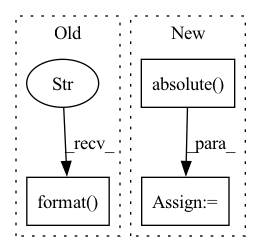

Pattern ID :31946

Before Change
else:
if hub_modelID is None:
logger.error(
"Requested file {} does not exists locally. It can be downloaded from HuggingFace ModelHub using "hub_modelID" argument".format(
filename
)
)
raise FileNotFoundError
os.makedirs(local_path, exist_ok=True)
After Change
url = huggingface_hub.hf_hub_url(source, filename)
fetched_file = huggingface_hub.cached_download(url, cache_dir=savedir)
// Huggingface hub downloads to etag filename, symlink to the expected one:
sourcepath = pathlib.Path(fetched_file).absolute()
destination.unlink(missing_ok=True)
destination.symlink_to(sourcepath)
return destination
In pattern: SUPERPATTERN
Frequency: 3
Non-data size: 3
Instances
Fragment ID: 93386097
Project Name: speechbrain/speechbrain
Commit Name: bddc7b68453731ac3cac39e3dc8e33b6e447f8f2
Time: 2021-02-26
Author: aku.rouhe@aalto.fi
File Name: speechbrain/pretrained/fetching.py
M Class Name: AnonimousClass
N Class Name: AnonimousClass
M Method Name: fetch(3)
N Method Name: fetch(3)
M Parent Class:
N Parent Class:
M File Name: speechbrain/pretrained/fetching.py
N File Name: speechbrain/pretrained/fetching.py
M Start Line: 25
M End Line: 56
N Start Line: 10
N End Line: 79
'>
Before Change
args.logdir += "_{}".format(args.dataset) + \
"_st{}".format(args.student_name.upper()) + \
"_epoch{}".format(args.num_epochs) + \
"_lr{}".format(args.learning_rate) + \
"_batch{}".format(args.train_batch_size) + \
"_maxseq{}".format(args.max_seq_length)
After Change
args.experiment_folder = os.path.join(args.experiment_folder, args.dataset)
args.logdir = os.path.join(args.experiment_folder, args.logdir)
experiment_dir = str(Path(args.logdir).parent.absolute())
if os.path.exists(args.logdir):
shutil.rmtree(args.logdir)
if args.debug:
args.logdir = os.path.join(args.experiment_folder, "debug")
else:
args.logdir = args.logdir + "/" + date_time + "_st{}".format(args.student_name.upper())
os.makedirs(args.logdir, exist_ok=True)
logger = get_logger(logfile=os.path.join(args.logdir, "log.log"))
// Setup CUDA, GPU & distributed training
if args.no_cuda:
device = torch.device("cuda" if torch.cuda.is_available() and not args.no_cuda else "cpu")
args.n_gpu = torch.cuda.device_count()
else: // Initializes the distributed backend which will take care of sychronizing nodes/GPUs
device = torch.device("cuda")
args.n_gpu = 1
args.device = device
args.train_batch_size = args.train_batch_size * max(1, args.n_gpu)
args.eval_batch_size = args.train_batch_size * max(1, args.n_gpu)
logger.info("\n\n\t\t *** NEW EXPERIMENT ***\nargs={}".format(args))
astra(args, logger=logger)
close(logger)
// summarize results for all seeds
all_results = summarize_results(experiment_dir, args.dataset)
print("\nResults summary (metric={}): {}".format(args.metric, all_results))
if __name__ == "__main__":
'>
Fragment ID: 93386099
Project Name: microsoft/astra
Commit Name: e9db9d981b54a731d22762a9d2f5f5eeab90abdf
Time: 2021-05-24
Author: giannis.karamanolakis@gmail.com
File Name: astra/main.py
M Class Name: AnonimousClass
N Class Name: AnonimousClass
M Method Name: main(0)
N Method Name: main(0)
M Parent Class:
N Parent Class:
M File Name: astra/main.py
N File Name: astra/main.py
M Start Line: 259
M End Line: 323
N Start Line: 261
N End Line: 336
'>
Before Change
map_input = map_input / input_path.name
cmd += f" -e MONAI_INPUTPATH={map_input}"
cmd += " -v {}:{} -v {}:{} {}".format(input_path, map_input, output_path, map_output, map_name)
print("//", cmd)
if quiet:
return run_cmd(cmd)
After Change
map_command = app_info["command"]
// TODO(bhatt-piyush): Fix "monai-exec" to work correctly.
cmd += " -v {}:{} -v {}:{} --entrypoint "/bin/bash" {} -c "{}"".format(
input_path.absolute(), map_input, output_path.absolute(), map_output, map_name, map_command
)
if quiet:
'>
Fragment ID: 93386108
Project Name: project-monai/monai-deploy-app-sdk
Commit Name: faf733f31df0efeb88d9b08994631bd2ed5f4841
Time: 2021-08-20
Author: gbae@nvidia.com
File Name: monai/deploy/runner/runner.py
M Class Name: AnonimousClass
N Class Name: AnonimousClass
M Method Name: run_app(5)
N Method Name: run_app(5)
M Parent Class:
N Parent Class:
M File Name: monai/deploy/runner/runner.py
N File Name: monai/deploy/runner/runner.py
M Start Line: 75
M End Line: 93
N Start Line: 75
N End Line: 101